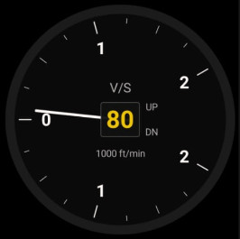

📈
Variomètre
Vitesse verticale ft/min
ANLVAR · analogique

Possibilités
- Affiche la vitesse verticale en ft/min.
- Analogique seul : en numérique, le vario est intégré à NUMALT.
Gestes
– Appui long : —
·· Double-tap : —
Réglages liés
- Source vario : GPS ou baromètre (onglet Cockpits).
- Unité : ft/min ou m/s selon l'unité d'altitude (onglet Cockpits).